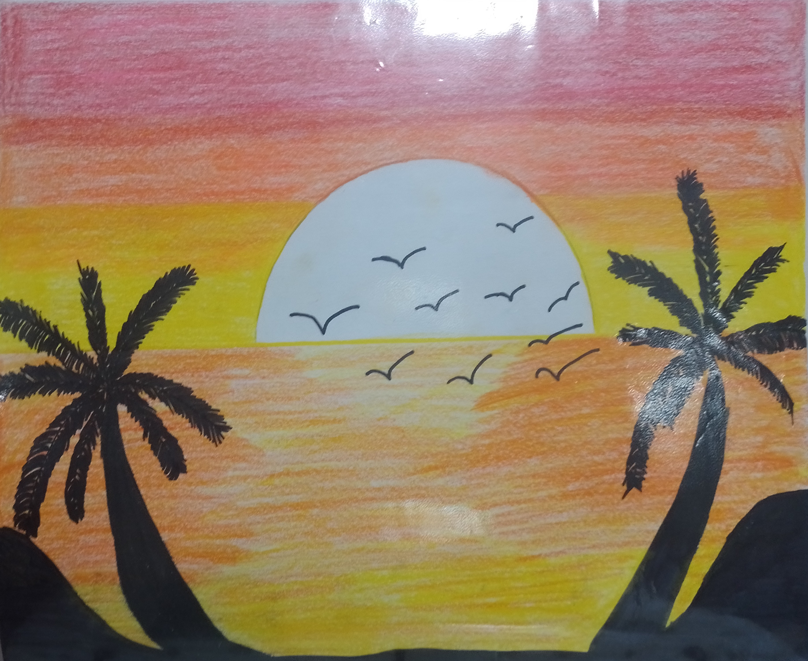
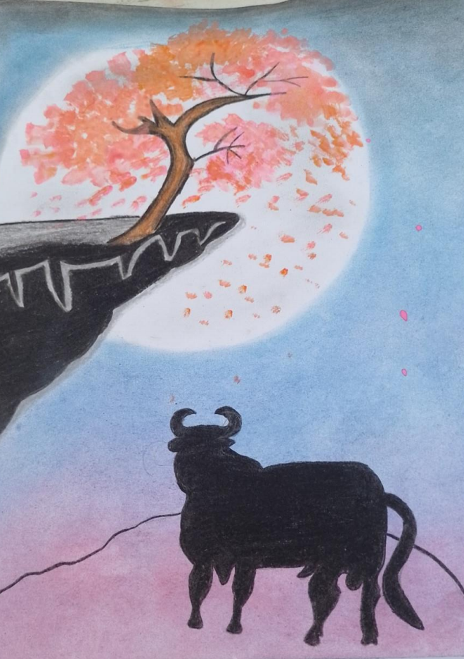

Ilustracion
En lo perosnal el atardecer es mi momento favorito del día. Así que dibujar el atardecer fue mi dibujo favorito y combinar los colores de lápiz fue algo relajante.
Atardecer
El Toro enamorado de la Luna
Este dibujo fue una inspiracion a una canción, pero utilizar la tecnica de gis fue lo mejor, crear y diseñar un toro y representar que esta enamorado de la luna fue un trabajo poco tedeoso, pero no imposible.